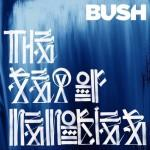
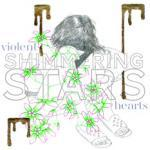

Music Reviews
-
Slow Club Paradise
Pay attention to the band that Slow Club have become / You'll find this record rather niiiiiiiiiiiiiiice / I'd like to take you through an album you should be proud to own / Welcome to Paradise.
Joe Rivers will be your tour guide for the day... -
Roberts & Lord Eponymous
Simon Lord and Rafter Roberts, both with respectable careers underway, combine on Eponymous to create a cluttered-but-clever take on pop music.
Matt Montgomery reviews... -
Nurses Dracula
It's goth, it's 80s, its now! Or is it?
Alan Shulman reviews -
Regina Soita Mulle
Through the opening arpeggios and vocals, the only thing you can hear is a triumphant eruption of melodic dream pop.
Matt Montgomery reviews... -

Balam Acab Wander/Wonder
The debut album from the impenetrably named Balam Acab (the brilliantly/irritatingly precocious Alec Koone), with its moody sleeve and his witch house links, promised to be a dark, ominous listen. So the fact that it sounds like it was recorded at the bottom of a helium-filled well was a bit of a surprise.
Mark Davison doesn't know whether to laugh or cry... -

Bush The Sea of Memories
We could only hope for The Sea of Memories to actually be a sea of memories from better days, but Bush delivered a pond of mediocre modern rock. Again.
Luredo Marbery reviews... -

The Kooks Junk of the Heart
The Brighton foursome overcomes any downward friction caused by unstable lineup changes with a positively-charged pop record that tries a bit too hard to synthesize their Britrock conventions.
Juan Edgardo Rodríguez cuts them some slack... -

Mister Heavenly Out Of Love
Mister Heavenly will make you want to start rolling up your pack of cigs in the sleeve of your shirt. Welcome to Doom Wop.
Randi Dietiker reviews... -
Red Hot Chili Peppers I'm With You
The Red Hot Chili Peppers have made some good music. They've also made mediocre music and completely awful music. Where will a new guitarist and a long hiatus take them? Not into the great unknown, that's for sure.
Andrew Baer loved this band when he was 15... -

Shimmering Stars Violent Hearts
Any delight taken with the nice use of melody and the playful guitar work on Violent Hearts is quickly thrust aside as oppressive reverb builds.
Matt Montgomery is still cleaning the reverb from his ears...